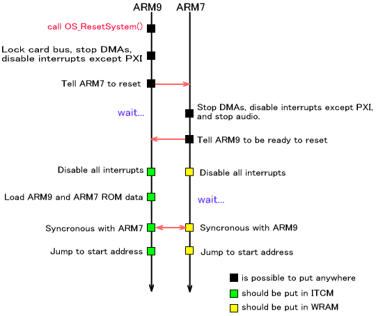
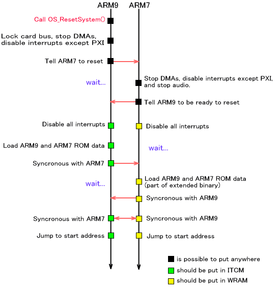
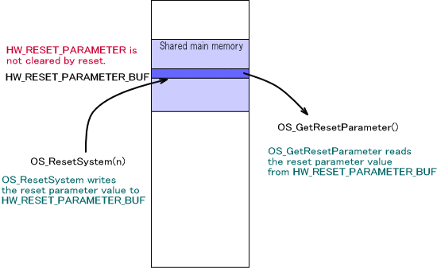

TWL-SDK にはソフトウェアリセットのシステムが用意されています。これは、カードからメインメモリにROMデータを読み込んで適切なアドレスにPCを移動することで、プログラムを先頭から実行し直すための仕組みです。
ソフトウェアリセットを使用する場合は、予め OS_InitReset()が呼ばれていなければなりませんが、OS_Init() から呼び出しを行なっていますので、特にアプリケーション側で呼び出す必要はありません。
ソフトウェアリセットをかけることが出来るのは、ARM9 からのみです。その命令は、 OS_ResetSystem() となります。ARM7では、ARM9 からのソフトウェアリセット指示が出るまで、通常の動作を行ない、指示が
PXI 経由で送られると( PXI 割り込みとして通達されます ) ソフトウェアリセット処理を開始します。
ソフトウェアリセットは カードROM からNITRO互換領域のデータを読み込みなおすように設計されており、NITROモードのカードアプリ専用の機能となっています。従って、動作しているのがTWLモードのカードアプリやNANDアプリであったり、マルチブート子機である場合はこの関数を呼んでソフトウェアリセットを行うことが出来ません。
TWLモードで動作している場合は、代わりにハードウェアリセットを利用した OS_RebootSystem() を使用することができます。OS_RebootSystem() で再起動したか、システムメニューから直接起動したかを判定する関数として
OS_IsRebooted() が用意されています。
ハードウェアリセット自体については PM ライブラリの 「ハードウェアリセット・シャットダウン (概要)」 を参照してください。ただし、ハードウェアリセットを利用したいくつかの関数が OS カテゴリに存在しますのでそれについては後述の「ハードウェアリセットを利用したアプリケーションジャンプ」を参照してください。
NITRO の場合ARM9 が OS_ResetSystem() を呼ぶと、ARM9, ARM7 の２つのプロセッサは以下のように動作します。

ARM9 側は、カードバスのロック解除を待ち、すぐにカードバスをロックします。次にすべてのDMAを終了させます。そしてARM7からの通信のためにPXI受信割り込みのみを有効にし、その他の割り込みを禁止します。そしてARM7 にリセット通知を行ないます。
ARM7側では、ARM9 からのリセット通知を受け取り、すべてのDMAを終了させ、ARM9からの通信のためにPXI受信割り込みのみを有効にします。またサウンドライブラリに停止を通達します。
ここからは ARM9 は ITCM、ARM7 はWRAM上での動作となります。
ARM7、ARM9 ともに全割り込みを禁止します。その後、ARM9がメインメモリの共有エリアに格納されているROMヘッダ情報にしたがって、カードからROMデータを読み込みます。

読み終わった後に一旦同期を取り、ARM7、ARM9とともに、メモリやレジスタのクリアを行ないます。
ROMヘッダ情報に従い、開始アドレスを PC (program counter) に設定します。
TWL の場合ARM9 が OS_ResetSystem() を呼ぶと、ARM9, ARM7 の２つのプロセッサは以下のように動作します。

NITRO モードとの違いは、DMA をクリアする際に新規DMA も停止する点と、ROM データの再ロード部分です。
TWLでは、NITRO と異なり ARM7 側でもROM データのリロードを行っています。これは ROM データのうち TWL で拡張された部分の中でカードから読み込むことが出来ないパートを、退避させていたメインメモリから読み込むという動作となります。
ソフトウェアリセットシステムには、現在のプログラム動作が電源投入後か、再実行後かの判定などに使用できる「リセットパラメータ」というu32値が用意されています。
リセットパラメータを取得する関数は OS_GetResetParameter() です。この値は、電源投入後は常に 0 ですが、一度 OS_ResetSystem() を呼び出した後は、その OS_ResetSystem() の引数の値となります。複数回リセットした場合は、最後に呼び出された OS_ResetSystem() の引数の値となります。
リセットパラメータが格納されている領域は、メインメモリの共有領域内で、この部分はリセット処理ではクリアされませんのでリセット後のプログラムに値を渡すことが可能です。

ハードウェアリセット自体は PMライブラリの関数( PM_ForceToResetHardware() ) で行いますので、PM ライブラリの 「ハードウェアリセット・シャットダウン(概要)」 も参照してください。
ハードウェアリセットを利用してシステムメニューにジャンプする命令として、 OS_JumpToSystemMenu() が用意されています。その他、本体設定の無線設定にジャンプする OS_JumpToWirelessSetting() 、本体設定のインターネット設定にジャンプする OS_JumpToInternetSetting() 、本体設定のインターネット - 利用規約にジャンプする OS_JumpToEULAViewer() が用意されています。
2009/06/08 NITROモード専用機能として記述を修正。
2009/06/03 OS_Init() が必須になったための記述修正
2008/09/06 TWL モードの場合の図等を追加
2005/03/08 用語統一 [割込み] → [割り込み]
2004/12/13 用語や語尾など修正
2004/11/02 初版